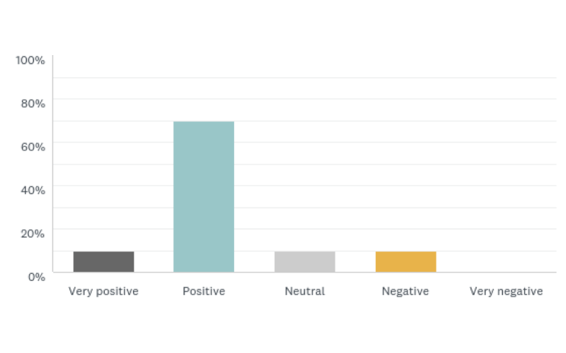
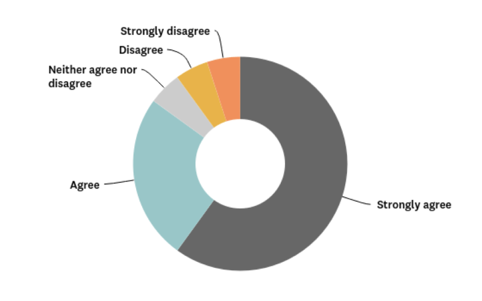

Roles
- User Research
- Model Design
- Initiative Owner

Deliverables
- User Surveys
- Web Project Analysis
- User Interviews

Tools
- Survey Monkey
- PowerPoint
- Visio
What is Self-Serve Author Model?
Self-Serve Author Model is designed to empower marketing business owners to complete their work more efficiently by allowing them to make their content updates on their own in AEM Content Management System. The model eliminates the unnecessary steps in the process such as creating seperate projects in workfront for minor content updates and allows changes made to the site faster. Project Duration: 12 months
Problem
The process for making minor content updates on the site was inefficient. Based on the project requests submitted in workfront during a 15 month time-frame 47% of these requests were for updating existing site content vs. creating new. After analyzing the projects and the workflows for existing Self-Serve areas I defined an eligibility criteria on determining whether a site section is eligible to become a self-serve area. There were over 20 project sponsors who have submitted almost close to half of these projects requests.
I decided to analyze the workfront project data to determine whether some of these requests meet our eligibility criteria and could potentially be completed with Self-Serve Authoring more efficiently instead of going through the regular web project request workflow with WebOps Team.
- 2,177 Workfront Projects Completed/In Process from Jan 2016 – March 2017 (15 months)
- 1,022 are “Update Existing Web Page” (47%)
- 23 Project Sponsors requested 45% of all Projects (995 projects =>20 each)
Solution
Self-Serve Author Model is designed to empower Marketing Business Owners to make their own minor content updates on their site section to increase efficiency and to reduce the number of unnessary project requests. However, not all site sections are suitable for this model. Therefore, we defined an eligibility criteria and moved forward with piloting only the site sections that meet the criteria.
Goals
- Analyze which site areas followed the model successfully and assess the reasons.
- Identify pluses and deltas of Self-Serve Author Model and propose methods to address the deltas.
- Report on AEM Contributors and Self-Serve Authors overall satisfaction with using AEM Content Management System to make content updates.
My Approach
I conducted user interviews with authors from the existing self-serve areas to get their feedback on cons and pros of Self-Serve Authoring. I presented interview results, eligibility criteria that we defined to expand Self-Serve Authoring by proposing a list of potential site sections that meet our criteria to Marketing Management Team. There was an agreement to pilot for the site sections that we proposed for about 12 months. At the end of the 8 month time-frame I conducted interviews with authors, sent out a survey and interviewed individuals, who have monitored the quality for each site section in order to analyze and determine the next steps.
Workflow and Self-Serve Levels
In Self-Serve Model, the content updates get tracked under a single project as separate tasks in Workfront in order to monitor quality and track requests instad of creating seperate projects. Content updates get reviewed, edited and published by individuals who is responsible for the quality of the site sections. We defined two permission levels to reduce the risk for quality issues.
Level 1: Contributor
- Can only edit existing pages and upload/update assets, add metadata.
- Cannot publish pages and assets.
- Cannot delete pages.
- More experienced authors will be reviewing the content to publish and/or delete.
Level 2: Self-Serve Author
- Can create new pages and edit existing pages.
- Can publish pages and assets.
- Onward (offshore vendor) & WebOps Team members are available as an escalation point.
Criteria for Self-Serve Eligibility
- Frequently Requested: Frequency of total number of projects/ per quarter is equal or greater than 10.
- Non-Complex: Min. page/asset URL change, min. page/asset deletion, min. redirect setup, no query run, no translation, no updates to translated content, structured page layout.
- Minumum Involvement of Multiple Groups: Min. approval other than sponsor, no legal review, no design/UX.
- Increased Efficiency: Less time spent updating content than creating and managing Workfront projects, easier for SME to make content updates, the content is generated in local offices by native speakers.
- Minimum Number of Authors: The total number of authors is equal or less than 5.
- Business is interested: Business shows interest for their area to become self-serve.
User Surveys
I sent out a survey to Level 1 Contributor and Level 2 Self-Serve Authors. The purpose of the survey was to understand the overall satisfaction that Self-Serve Authors and Contributors have with using AEM Content Management System to make their own content updates. Below you can see the summarized key takeaways from survey results.
Pluses
- 80% of the responders rated their overall experience of using AEM to make content updates positive.
- Although the frequency of updates varied 25% made updates once a month.
- 55% indicated that the escalation requests were less than once a month, 20% a few times a month and 20% once a month.
- 85% responders indicated that they beleived that authoring pages on their own was more efficient and less time consuming in their workflow.
- 70% of the responders believe that they received sufficient training to perform content updates on their own.
Deltas
- Users requested the following areas to be improved: Notifications, Search and Filtering in AEM.
- They requested WebOps to share best practices, tips and tricks with authors proactively.
- They requested communication when there are new features and changes to existing features.
- They wanted to be aware of all available training documentation specific to their site area and requested self-help training resources (i.e.; short video tutorials)
How would you rate your overall experience using AEM to make content updates?
Authoring pages on my own is more efficient and less time consuming.
User Interviews
Below you can see the summarized key takeaways from the interviews that I conducted with authors and individuals who have monitored quality for the following site sections: Student Competitions, PPC & Discovery Pages, Legal Patents Page, Hardware Detailed Pages, Solutions, Product Pages-MATLAB Online.
Pluses
- They thought that engaged, motivated and qualified authors were successful in this model.
- The site areas with frequent updates and minimum number of selective authors were successful.
- They thought that making minor content updates were more efficient in this model.
- Although some thought that the model was efficient only for Authors, but not for QA the majority of them agreed that the model was more efficient for both.
Deltas
- They suggested introducing weekly or bi-weekly drop-in hours with WebOps to ask questions.
- They suggested WebOps to provide self-learning resources, training videos to make it easier for authors.
- Those who monitored quality thought that it was best that they continued to monitor the quality.
- Contributors wanted be able to upload/update assets as well.
Final Thoughts
Based on the user interviews and survey results we decided to stay with the current model and not expand it for now. The current Level 1 Contributor Users will continue to remain as contributors. We will continue to pilot and monitor the site sections with unknown project frequency to determine whether there is any change. We decided that all new requests would be vetted using the original eligibility criteria. We will continue to optimize the training and resources. Even if we don’t expand the model we agreed that we still need an efficient training structure for new hires and new authors that may join the existing site areas.